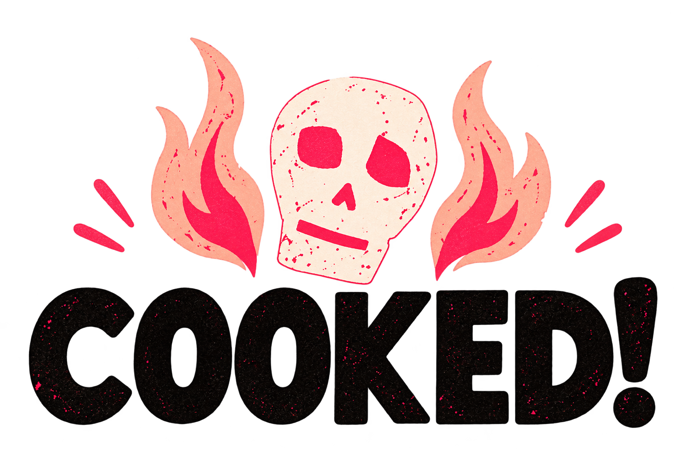

Kitchen mode
Dinner hits the table
16:00
✦
Now cooking
01 / 06
13:00
Prepare, season and sear the beef.
Up next ·
13:20
←
Previous
↻
Repeat
≡
Show all
Next stage
→
◷
Local kitchen timer
Start 10:00
Simulation
Roast beef dinner
The whole game plan
×